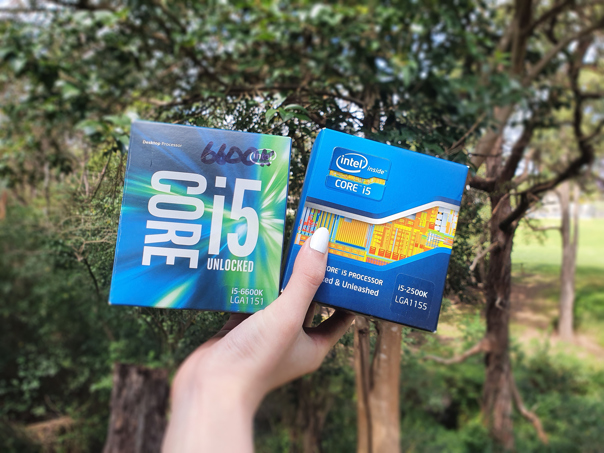
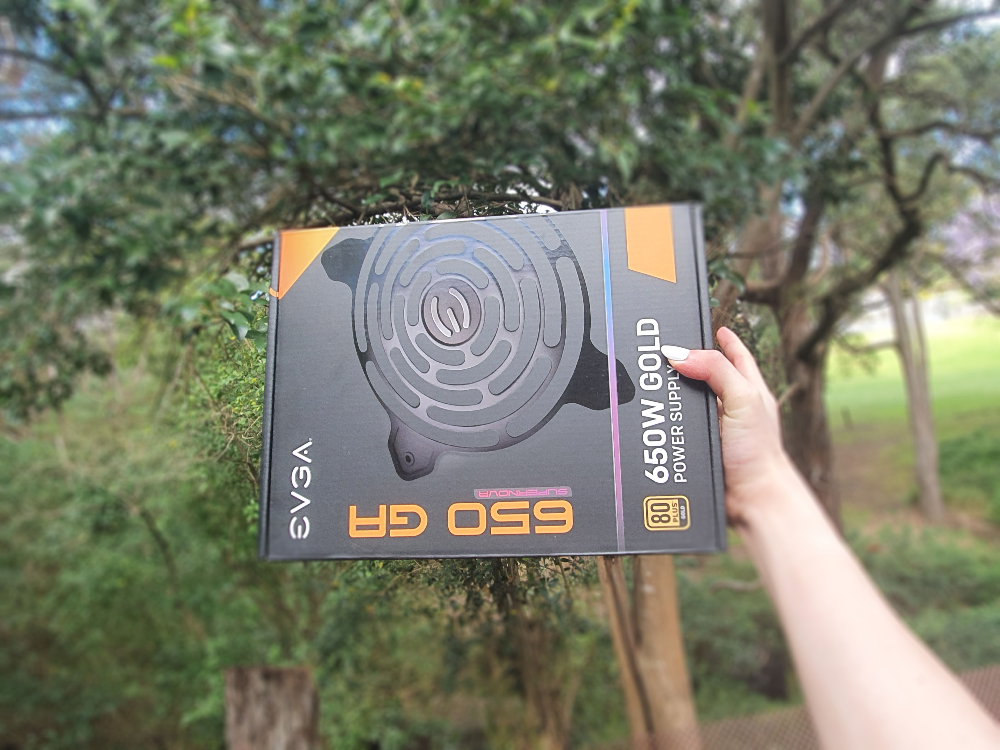
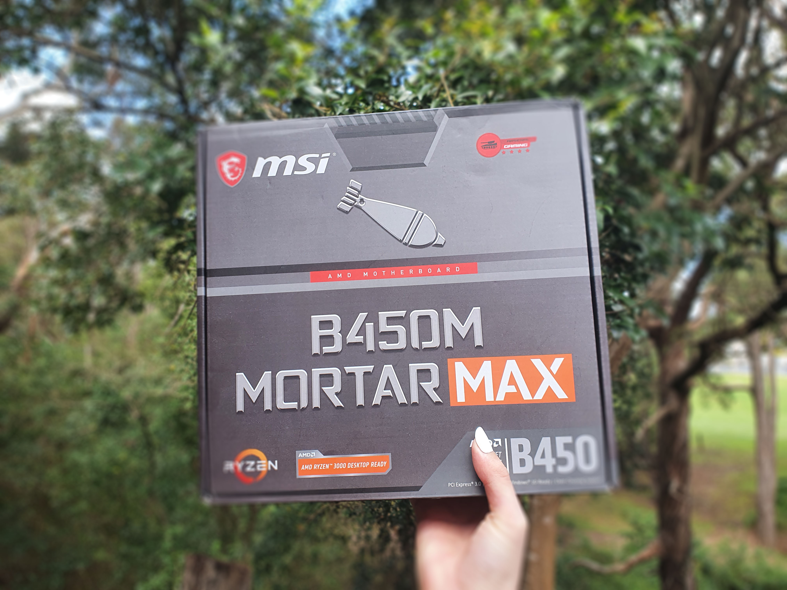

Regarding the CPU...

Being the “heart” of the system, the CPU should definitely be one of your biggest considerations when budgeting. For productivity purposes, CPU often matters more than the GPU for performance. The CPU market is essentially a duopoly between Intel and AMD – since the release of AMD’s Ryzen line of CPUs, the two companies have been very competitive. Certain workloads may favour either company’s chips more, but for the most part both companies have some excellent options so it’s not necessary to think of either being better than the other.
Regarding the RAM...

Unless there is some specific software with high ram usage you’d like to run, 16GB is the sweet spot for the majority of people. Some examples would be huge Photoshop files, or video editing projects with high resolutions. Otherwise, 16GB will have no trouble running 99.9% of games, even with chrome tabs in the background. Don’t overspend on RAM of high frequency – 3200Mhz is a good baseline, and higher frequencies will usually net diminishing returns.
Regarding the GPU...

A second “heart” of the system(?) If you’re considering gaming as a use case of your system, then the GPU may be the most important component to budget for. Games with fancier graphics will need a more powerful GPU to run. If you’re running a higher resolution or high refresh-rate monitor that will be some extra load you need to plan for. The best way to decide whether a specific GPU is powerful enough is to watch a CPU/GPU pair benchmark video on YouTube – pay attention to the GPU and CPU loads and check for bottlenecks.
Regarding the PSU...

Don’t think you can save money by purchasing a no-brand cheapo PSU! There is a possibility it could explode and take out your entire PC with it – even if it’s not something that drastic, these no-name PSUs will often die very quickly, and often exaggerate their max loads. Some extra headroom is nice in a PSU with higher capacity for future upgrades, but don’t overdo it if there is still room for extra budget in other components. Additionally, a modular PSU will make cable management much easier.
Regarding the MoBo...

The motherboard is the component I see the most people overspend on. Unless you want to spend extra money just for the aesthetics, there is often little reason to go for higher end motherboards. I’d recommend just picking the motherboard that has the minimum amount of features you are looking for, such as USB ports and fan headers. 4 RAM slots is something you should look out for, as it leaves you the option of upgrading a 2stick configuration without replacing your previous sticks. One thing to watch out on budget motherboards is the power limits – sometimes they can limit the performance of higher end CPUs. (Specifically, in 10th gen Intel CPUs)